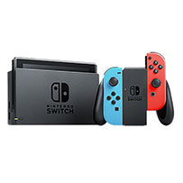

ESTRUTURA
Dimensões 102 x 239 x 13.9 - 28.4 mm
Peso 389 g
PLATAFORMA
Horizon
CPU SoC NVIDIA Tegra personalizado
GPU GeForce ULP
MEMÓRIA
Interna 32 GB, suporte a cartões microSD
RAM 4 GB de memória RAM
CONEXÕES
Wi-Fi ac, USB, Tipo-C, Áudio Estéreo (5.1 fone de ouvido)
CONTEÚDO DA EMBALAGEM
1 Console Switch, 2 Joy-Con, 1 Base para TV, 1 Base para o Joy-Con, 1 Cabo de Energia, 1 Cabo HDMI, Manuais
ESPECIFICAÇÕES
Consumo de energia 150 watts
Drive DVD
1080p@60fps
Voltagem 100-240 V CA, 50/60 Hz
